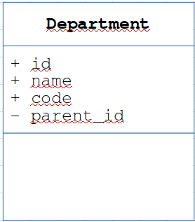
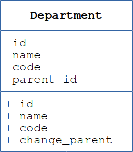

Содержание
ООП позволяет определять собственные типы данных в виде классов (
class).
Классы нужны, чтобы описать в программе понятия, существующие в реальном
мире, которые понадобятся нам в программной системе. В программе при
помощи классов мы будем создавать однотипные объекты, а из этих объектов
строить модель реального мира. Например, для обработки информации об
организации нам понадобятся информационные объекты, соответствующие
понятиям: «Организаия», «Подразделение», «Работник», «Книга», «Сервер» и
т. п.
Класс (
class) — это описание типа
информационного объекта, состоящее из 2-х основных разделов:
- 1) описания свойств, называемых
атрибутами (attribute) или полями данных (data field), которые характеризуют эти
информационные объекты и
- 2) описания операций с объектами
этого типа, называемых методами (method).
Например, для информационных объектов типа «Подразделение» логично описать
класс
Department, в котором предусмотреть
атрибуты: «идентификатор» (
id), «код» (
code),
«наименование» (
name), «идентификатор
вышестоящего подразделения» (
parent_id). Можно
считать атрибуты набором переменных, скрытых внутри каждого объекта этого
класса. Эти переменные будут содержать конкретные значения для каждого
объекта.

То есть у каждого объекта класса Department
будут внутренние переменные с именами id, name, code и parent_id, но у одного объекта значениями будут,
например, 20, 5520, "Служба ИТ", 55,
а у другого — 28, 2800, "Транспортный цех", nil.
В классе обычно описывается особый метод для инициализации
объекта, который отрабатывает при создании каждого объекта. В нём
чаще всего выполняются присваивания начальных значений атрибутам объекта.
Также в нём могут выполняться также и другие необходимые действия
(присваивание значений по умолчанию, вычисления, создание вложенных
объектов и т. п.).
Когда класс описан, можно создавать (instantiate)
объекты (object) этого класса, обращаясь к
особому методу класса, называемого конструктором
(constructor), который во многих языках имеет
зарезервированное имя new (а в других языках
совпадает с именем класса). При создании объекта конструктору в качестве
параметров часто передаются начальные значения для присваивания атрибутам
создаваемого объекта.
Класс выступает как "фабрика объектов": когда нам нужно
создать объект конкретного классы, мы обращаемся к этому классу с
"заданием" создать объект, и он "изготавливает" очередной экземпляр с
уникальным "заводским номером" (внутренним идентификатором), но с
определённым в классе набором "характеристик" (атрибутов) и "кнопок
управления" поведением (методов).
В описании класса встречается ссылка на текущий объект — специальное имя,
которое употребляется как "местоимение" при описании атрибутов: понятие
"мой атрибут" будет записано как
self.атрибут
или
this.атрибут (в зависимости от языка).
Примеры описания класса и создания объекта этого класса:
# Ruby:
class Department
attr_reader :id, :code, :name, :parent_id # описание атрибутов
# метод инициализации объекта, вызываемый при его создании
def initialize(id, code, name, parent_id) # параметры для присваивания начальных значений
@id = id
@code = code
@name = name
@parent_id = parent_id
end
end
it_dept = Department.new(20, 5520, "Служба ИТ", 55) # создать объект с id=20, code=5520, name="Служба ИТ", parent_id=55
// JavaScript:
class Department {
constructor(id, code, name, parent_id) {
this.id = id;
this.code = code;
this.name = name;
this.parent_id = parent_id;
}
}
var it_dept = new Department(20, 5520, "Служба ИТ", 55); // создать объект (конструктор == имя класса)
# Python:
class Department:
# метод инициализации объекта, вызываемый при его создании
def __init__(self, id, code, name, parent_id):
self.id = id
self.code = code
self.name = name
self.parent_id = parent_id
it_dept = Department(20, 5520, "Служба ИТ", 55) # создать объект (конструктор == имя класса)
// PHP:
class Department {
private $id, $code, $name, $parent_id; # атрибуты
# метод инициализации объекта, вызываемый при его создании
function __construct($id, $code, $name, $parent_id) {
$this->id = $id;
$this->code = $code;
$this->name = $name;
$this->parent_id = $parent_id;
}
}
$it_dept = new Department(20, 5520, "Служба ИТ", 55); # создать объект
// Kotlin:
class Department constructor(val id: Int, val code: String, var name: String, var parent_id: Int) {
// ...
}
val it_dept = Department(20, 5520, "Служба ИТ", 55) // # создать объект (конструктор == имя класса)
Таким же образом создаются и другие
объекты
класса, называемые экземплярами (
instance).
Каждый экземпляр (объект) имеет свой набор значений (
value)
атрибутов. Эти значения представляют состояние (
state)
объекта. Изменение состояния объекта возможно, если в классе описаны
соответствующие методы.
Доступ к значению свойства часто записывается в виде
объект.атрибут.
Именно объекты выполняют полезные действия при выполнении
программы: один объект обращается к другому для выполнения какого-то
действия, вызывая метод этого объекта. (В терминах ООП: отправляя (send)
другому объекту сообщение (message), совпадающее с именем метода.)
В ответ на запрос от какого-то объекта, этот объект может изменить своё
состояние или запросить у другого объекта выполнить нужное действие.
Метод (method) — это подпрограмма, которая
описана в определении класса и реализует операцию с объектом этого класса.
Поскольку методы имеют доступ к атрибутам объекта, с их помощью
организуется контролируемый доступ к значениям атрибутов. Такой механизм
доступа называется инкапсуляцией (incapsulation).
Для чтения значения атрибута
описывается особый метод (getter / reader),
часто совпадающий с именем атрибута. Если требуется, можно описать
операцию для изменения значения атрибута
(setter / writer).
Например, для класса Department можно описать
метод для изменения подчинённости подразделения change_parent(parent_department),
который будет изменять атрибут parent_id.
В отличие от глобально объявленных подпрограмм при вызове метода всегда
указывается имя переменной, хранящей ссылку на конкретный объект. Формат
записи зависит от языка, но чаще всего применяются такая запись: объект.метод()
или объект->метод().
При этом внутри метода ссылка на текущий объект, для которого выполняется
метод, доступна под специальным именем: чаще всего self
или this. Поэтому понятие "мой метод" будет
записываться, например, как self.method().
Это "местоимение" уже было показано в примерах, где описывался класс
«Подразделение». Только там оно применялось при описании свойств: "мой"
атрибут.

Примеры методов доступа к атрибутам объекта:
# Ruby:
class Department
# метод инициализации объекта, вызываемый при его создании
def initialize(id, code, name, parent_id)
@id = id
@code = code
@name = name
@parent_id = parent_id
end
# вместо генерирования атрибутов с помощью описания:
# attr_reader :id, :code, :name, :parent_id # атрибуты
# можно вручную описать методы для чтения значений атрибутов:
def id; return @id; end # Эти getter-методы создаются
def code; return @code; end # описанием attr_reader.
def name; return @name; end # Описание attr_writer
def parent_id; return @parent_id; end # создаёт setter-методы.
def change_parent(parent_department)
@parent_id = parent_department.id
end
end
it_dept = Department.new(20, 5520, "Служба ИТ", 5500)
print it_dept.id, ' ', it_dept.code, ' ', it_dept.name, "\n"
it_dept.change_parent(Department.new(12, 5005, "Техническая служба", 0))
print(it_dept.parent_id) # --> 12
// JavaScript:
class Department {
constructor(id, code, name, parent_id) {
this.id = id;
this.code = code;
this.name = name;
this.parent_id = parent_id;
}
change_parent(parent_department) {При этом внутри метода
ссылка на текущий объект, для которого выполняется метод, доступна под специальным именем:
this.parent_id = parent_department.id;
return this.parent_id;
}
}
var it_dept = new Department(20, 5520, "Служба ИТ", 55);
console.log(it_dept.code);
it_dept.change_parent(new Department(12, 5005, "Техническая служба", 0));
console.log(it_dept.parent_id); // --> 12
# Python:
class Department:
# метод инициализации объекта, вызываемый при его создании
def __init__(self, id, code, name, parent_id):
self.id = id
self.code = code
self.name = name
self.parent_id = parent_id
# описание методов для чтения значений атрибутов
def id(self): # метод для доступа к значению "id"
return self.id
def code(self):
return self.code # метод для доступа к значению "code"
def name(self):
return self.name # метод для доступа к значению "name"
def parent_id(self): # метод доступа к значению "parent_id"
return self.parent_id
def change_parent(self, parent_department):
self.parent_id = parent_department.id
it_dept = Department(20, 5520, "Служба ИТ", 55)
print it_dept.id, it_dept.code, it_dept.name, "\n"
it_dept.change_parent(Department(12, 5005, "Техническая служба", 0))
print(it_dept.parent_id) # --> 12
// PHP:
class Department {
private $id, $code, $name, $parent_id; # атрибуты
# метод инициализации объекта, вызываемый при его создании
function __construct($id, $code, $name, $parent_id) {
$this->id = $id;
$this->code = $code;
$this->name = $name;
$this->parent_id = $parent_id;
}
// описание методов для чтения значений атрибутов
public function id() { // метод для доступа к значению "id"
return $this->id;
}
public function code() { // метод для доступа к значению "code"
return $this->code;
}
public function name() { // метод для доступа к значению "name"
return $this->name;
}
public function parent_id() { // метод доступа к "parent_id"
return $this->parent_id;
}
public function change_parent(parent_department) { // setter
$this->parent_id = parent_department.id;
}
}
$it_dept = new Department(20, 5520, "Служба ИТ", 55);
print($it_dept->id() .' '. $it_dept->code() .' '. $it_dept->name()."\n".);
$it_dept->change_parent(new Department(12, 5005, "Техническая служба", 0));
print($it_dept->parent_id()); // --> 12
Q: Чем класс отличается от типа данных ?
A: В объектно-ориентированном языке
программирования есть встроенные классы, много пользовательских классов
описано в библиотеках языка, которые подключаются по мере необходимости.
Программист может описывать свои классы, которые по сути являются
пользовательскими типами данных.
В одних ОО-языках помимо классов есть типы данных, называемые
"простыми", "примитивными" или "встроенными" (целые и дробные числа,
строки, логические величины). В других языках (например в Ruby
или Kotlin), все типы данных являются
классами.
Q: А класс тоже является объектом?
A: Логически рассуждая, да, классы — это
экземпляры класса Class. У них есть свои методы (например, конструктор
для создания объектов) и могут быть свои атрибуты, в которых хранятся
значения. Именно так реализованы классы в языке Ruby.
Q: Если операция со стэком stack.push(element)— это метод, то и
операция + в выражении 20 + 5
— это тоже метод для чисел?
A: Логично. Например, в языке Ruby
инфиксную операцию +
в выражении 20
+ 5 можно записать и объектным способом: 20.+(5).
- Для чего нужны классы?
- Как создаются объекты конкретного класса?
- Как называется метод, который отвечает за создание нового
объекта?
- Каким образом можно установить начальные
значения для атрибутов при создании объекта?
- Как называются методы для чтения значений атрибутов?
- Как называются методы для изменения значений атрибутов?
- С помощью какого специального имени объект выражает понятие "мой":
мой атрибут, мой метод?
- Выражения "объект X отправляет
сообщение move(home) объекту Y"
и "объект X вызывает метод move(home)
объекта Y" означают одно и то же или
нет?
OC01. Задание OC#01.
Написать класс
Organization, который описывает
тип «Организация» со следующими атрибутами:
id (идентификатор): целое число
name (наименование): строка
long_name (полное наименование): строка
и методом для заполнения атрибутов информацией об организации из базы
данных (БД), находя её в соответствующей таблице по атрибуту
id:
the_organization = Organization.load(id)
а также методом для сохранения в базе данных информации об организации:
the_organization.save()
который изменяет в таблице БД запись об организации, находя её по
атрибуту
id, или добавляет в таблицу БД запись
со сведениями об организации, если в БД отсутствует запись с таким
значением атрибута
id. При этом атрибуту
id присваивается значение из созданной записи.
Пример работы этих методов (
PHP):
$jet_brains = new Organization(0, "JetBrains", "JetBrains s.r.o."); // создан объект класса "Организация"
$jet_brains->save(); // объект записан в хранилище, присвоено значение id
$organization = Organization::load($jet_brains->id()); // объект восстановлен из хранилища
print($organization->name(); // --> "JetBrains"
Содержание